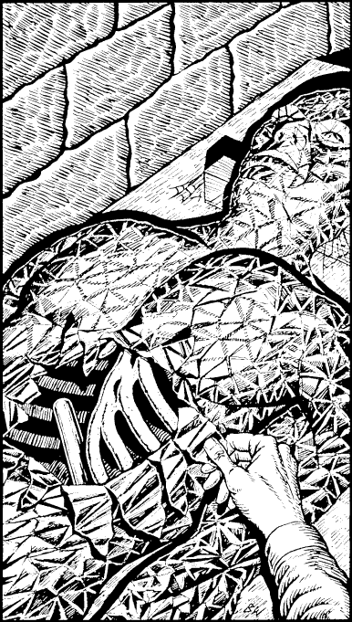

177
The statue is wrapped in a thin, silvery blanket of metal, its crumpled surface reflecting a glittering mosaic of light upon the rough rock walls. Carefully you peel away the metal sheeting to discover that the statue is no more than a tangle of mouldering bones, the remains of a creature long deceased. Judging by the size of the skeleton, this creature must have stood almost nine feet tall.

What little it once wore has long since crumbled to dust, but lying beside the rib cage you discover a rod of silver that gleams as if it were new. If you wish to take this Silver Rod, mark it on your Action Chart as a Special Item which you carry tucked through your belt.
To continue, turn to 334.